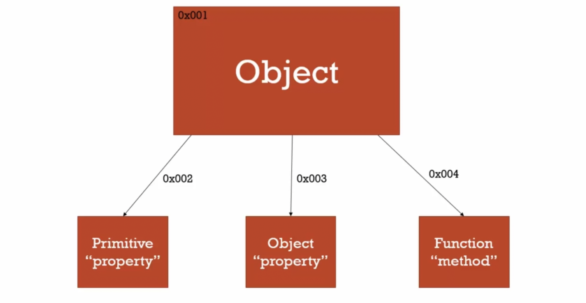
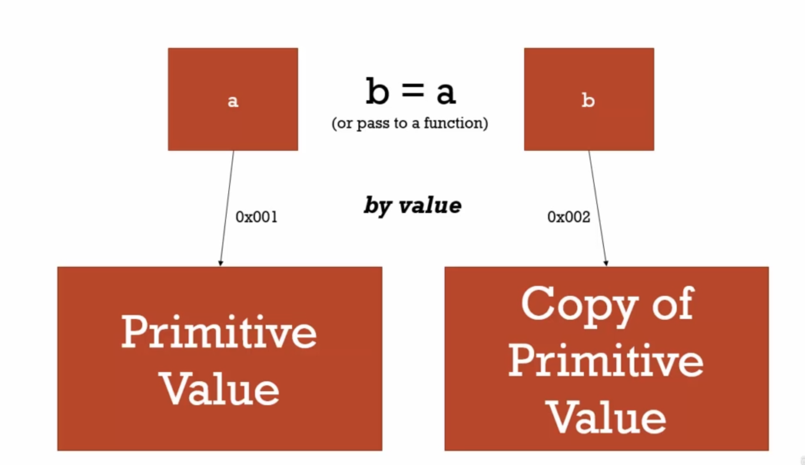
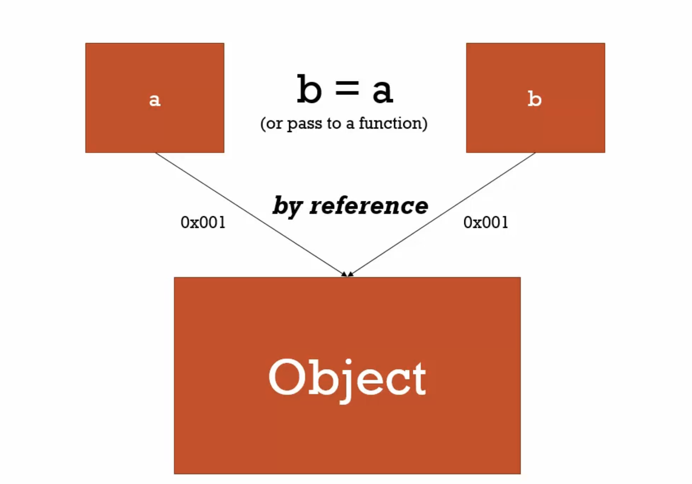

【克服JS的奇怪部分】Objects and Functions —— Part 1
此篇是記錄 Udemy 上面的課程 JavaScript: Understanding the Weird Parts 的筆記。
🐳 Concept Asides 名詞解釋
🦀 Namespace
A container for variables and functions.
Typically to keep variables and function with the same name seperate.
JavaScript 本身並沒有 namespace，但可以透過善用 object 來儲存相同的命名方式，比如用不同的 object 來儲存都叫做 greet 的變數名稱。
1 | const english = { greet: "Hello!" }; |
🦀 First Class Function
Everything you can do with other types you can do with functions.
Assign them to variables, pass them around, create them on the fly.
🦀 Mutate
To change something.
Immutable means it can’t be changed.
🦀 Arguments
The parameters you pass to a function.
Jacascript gives you a keyword of the same name which contains them all.
🐳 Objects and Dot
在前面的影片當中有提到 object 是一對 key、value 的集合，那麼在記憶體當中，object 是如何儲存的呢？
一個 object 裡面的所有 property 會被存在各個記憶體位址，然後 object 所在的記憶體位址則會記得指向其他 property 被保存的記憶體位址。如下圖所示：

🐳 Funtcions are Objects
在 JavaScript 當中 function 就是 object 的一種，所以 function 擁有所有 object 的特性，但同時 function 也有一些自己的特點，例如： function 可以是匿名的，而且 function 有一段自己的 code（可以理解為 function 的其中一個 property 是 code），並且可以透過呼叫 () 來執行。如下圖所示：

所以其實這樣寫也是行得通的，因為 function 就是 object：
1 | function greet() { |
🐳 Function Statements and Function Expressions
在 JavaScript 當中有兩種方式可以用來宣告 function，分別是：敘述式（function statement）和表達式（function expression）。
🦀 Function Statement 敘述式
敘述式的寫法如下：
1 | function greeting() { |
🦀 Function Expression 表達式
表達式的寫法如下：
1 | const greeting = function() { |
或是用箭頭函式：
1 | const greeting = () => { |
🦀 兩者之間的差別
來看看這兩段程式碼就可以很清楚的知道敘述式和表達式的差別：
1 | greet(); |
1 | greet(); |
把這兩段程式碼丟去執行的話，可以看到第一個部分的程式碼能夠成功執行並印出 “hi”，因為在使用敘述式時，function 會被 hoisting，所以可以將執行的語法寫在宣告 function 之前。
但是在執行第二部分的程式碼時卻會出錯，因為雖然第二段的程式碼也會進行 hoisting，但被 hoisting 的只有變數本身而已，賦值這個動作並不會被 hoisting，所以在宣吿 greet 之前就呼叫執行它的話， greet 會進入暫時死區並且報錯（因為在這邊使用 const 的關係）。
從這個例子可以知道，敘述式和表達式的最大差別就是在 hoisting 的時候結果會不太一樣，而為了避免可能會產生報錯，盡量都在執行 function 之前先宣吿 function 才是比較好的選擇。
🐳 By Value and By Reference
🦀 By Value
目前有下列的程式碼：
1 | const a = 1; // primitive value |
如果 a 這個變數的值是一個 primitive type（例如數字、字串、布林值等等）的話，當我們將 a 賦值給 b 的時候，其實是會將 a 的值複製出一個新的，然後將它儲存在另外一個新的記憶體區塊，再把新的記憶體區塊 reference 到 b，如下圖所示：

🦀 By Reference
接下來以下面的程式碼範例為例，來舉例什麼是 by reference：
1 | const a = { firstName: 'John', LastName: 'Walker' }; |
從上述程式碼中可以知道，我們將 a 這個變數指向一個 object，然後再將 b 指向 a，最後去修改 b 這個 object 裡面的 property，但結果卻發現 a 裡面的 property 也被我們修改到了，也就是說我們不管是修改 b 或是修改 a 都會修改到同一個 object。
為什麼會發生上述這件事呢？是因為當資料型態是 reference type (object, array…) 的時候，JavaScript 是透過 by reference 去傳遞參數的，也就是如下圖所示：

其實 a 和 b 這兩個變數都指向同一個記憶體區塊（也就是 object 的所在位置），所以不管是透過 a 或 b 來修改 object，都是修改到同樣的東西。
ℹ️ 小小結論
知道 by value 和 by reference 的差別，有助於程式開發和除錯。在這邊會討論到 by value 和 by reference 的差別主要是因為，當我們在進行程式開發或是除錯的時候，會需要處理非常多各式各樣的資料型態。當如果不小心改動的原本的資料時，可能會導致某些 function 出錯，此時知道 by value 和 by referenct 的差異可以更好的去避免改動到原始資料，降低產生 bug 的機率！
🐳 Objects, Funcitons, and this
前面的幾部影片有提到 function 在執行的時候，會有一個 funciton 自己的 execute content 和 variable environment，並透過 scope chain 去拿到 outer environment 的變數，除此之外還會有一個東西——叫做 this，接下來這個部分會特別針對 this 來做說明。
首先，先來看看幾個簡單的例子：
1 | console.log(this); |
1 | function a() { |
1 | const b = funciton() { |
如果我們將上述三個程式碼放到瀏覽器當中去執行的話，可以知道這三個印出來的東西都是 window，也就是說，按照上面的方式（寫在 function 當中然後直接執行，或是直接執行）去呼叫 this，它所指向的東西都是 window 這個 global object。
接下來我們試試用在 object 裡面建立 method 的方式來呼叫 this：
1 | const c = { |
當我們將上述的程式碼丟到瀏覽器的環境中執行時， this 會印出 c 這個 object，也就是說透過一個 object 來呼叫其中的 method 的話，此時的 this 會指向該 object。接下來我們繼續看看下一個範例：
1 | const c = { |
按照上上一個程式碼範例的認知，如果在一個 object method 裡面呼叫 this，那麼 this 就會指向該 object，但當我們執行 c.log() 之後，裡面的 setName function 似乎並沒有成功地幫我們將 c.name 修改成新的名字。反而在 window 這個 global object 下面，找到了 window.name === 'Update c object'。也就是說 setName function 裡面的 this 是指向 window，並不是指向 object c。
為了要讓 this 能夠一直指向 object c，我們可以把程式碼修改成下面這樣：
1 | const c = { |
只要將 this 賦值給一個變數後，然後在其他所有有用到 this 的地方都改用該變數， 這樣寫在 c.log() 裡面的任何 function 都能夠透過 scope chain 去找到該變數指向的 this 了（也就是 object c）。
ℹ️ 小小結論
如果在 function 裡面呼叫 this，然後在 global 當中執行，通常 this 會指向 window，如果是呼叫放在 object 當中的 function 的話，呼叫的 this 則會指向該 object，但如果是在 object 的 function 中還有另一個內部的 function，這個內部的 function 呼叫的 this 會指向 window，為了避免這樣的 bug，可以先在 object function 裡面的最上方將 this 賦值給某個變數（通常會寫成 const self = this）。
🐳 ‘arguments’ and Spread
🦀 arguments
在開始說明什麼是 arguments 之前，我們先來看一個普通的 function：
1 | function greet(firstName, lastName, language) { |
在上述的 function 當中，雖然 greet() 這個 function 需要傳三個變數進去，但如果少傳了任何一個，Javascript 並不會報錯，而是會將沒有傳入任何值的變數預設成 undefined。而這樣的特性也就表示，可以很簡單的對一個變數設置一個預設值，比如，如果沒有傳 language 這個變數進去的話，先將其預設值設成 'en'，可以這樣寫：
1 | function greet(firstName, lastName, language = 'en') { |
或是比較舊的寫法：
1 | function greet(firstName, lastName, language) { |
在一個 function 當中，除了傳進去的變數之外，Javascript 也提供了一個稱作 arguments 的變數來接收傳進來的所有變數。此時我們可以來把上述的 function 改造一下，將 arguments 加進去，然後看看會發生什麼事情：
1 | function greet(firstName, lastName, language) { |
可以看到執行四遍的 greet() 分別印出了以下四個不同的 arguments：
1 | [] |
從印出的結果當中可以知道 arguments 是一個可以收集所有傳進 function 的變數的類 array，為什麼會說它是類 array 是因為它長得很像 array，可以做到一些跟 array 很像的事情，但 array 的某些特性它沒有。
這時候我們就可以用 arguments 來做一些事情，比如可以檢查有沒有變數傳進來，如果沒有就報錯：
1 | function greet(firstName, lastName, language) { |
🦀 spread
spread 簡單來說就是很常看到的 ...。而這個 ... 實際上有什麼用途呢？目前我所知道的用法主要有三個：
- 如果傳入某個 function 的變數可能是OO個和OO個以上，這個「以上」的部分可以用
...包起來。 - 可以用來解構 array。
- 可以用來解構 object。
廢話不多說，直接用實際的例子來看看：
1 | function greet(firstName, lastName, language, ...others) { |
在上述的例子，可以看到 others 這個變數印出了 [1, 2, 3, 4]，這也就是說它將 firstName, lastName, language 之外的值都包在 others 這個 array 裡面，這也就是表示這個 function 可以傳入三個或三個以上的值。
接著來看看解構的例子：
1 | const arr1 = [1, 2, 3, 4, 5, 6, 7, 8, 9, 10]; |
在上述程式碼中，可以透過 ... 拿到 arr1 裡面的每個元素，然後再把它放到 arr2 來達到淺拷貝。用在 object 當中也是同樣的道理。如此一來便可以輕鬆達到淺拷貝。